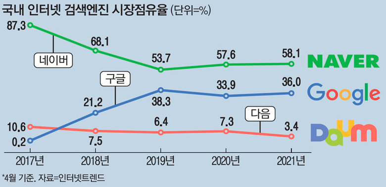
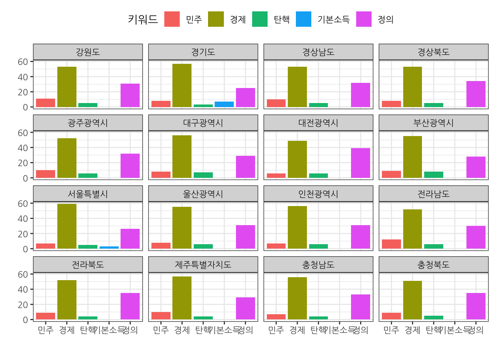

Chapter 3 구글 추세
3.1 검색엔진 점유율
매일경제 “구글 추격 따돌리자”…네이버 검색 지금보다 똑똑해진다 기사에 따르면 인터넷트렌드 자료를 인용하여 네이버와 구글의 검색엔진 시장 점유율을 다음과 같이 대략 6:4 정도로 추정하고 있다.

3.2 시대정신 키워드 트렌드
3.3 시도별 시대정신
Google Trends 비교 GUI 화면에서 “하위 지역별 비교 분석” 다운로드 버튼을 눌러 데이터를 zeitgeist_geoMap_20210530.csv 파일로 저장한 후에 시각화해서 비교 분석한다.

3.4 연관키워드 시대정신
kateo 미디어 데이터 네트워크 데이터 분석을 참고하여 데이터를 추후 정제한다.